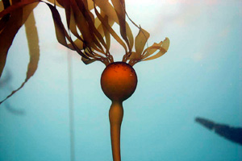
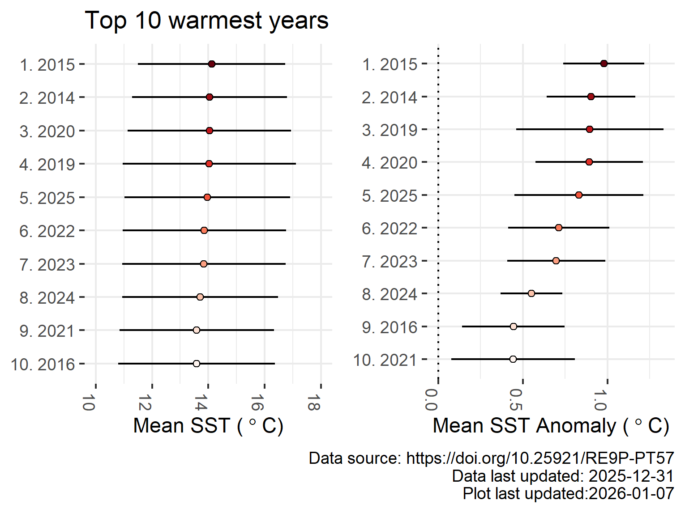
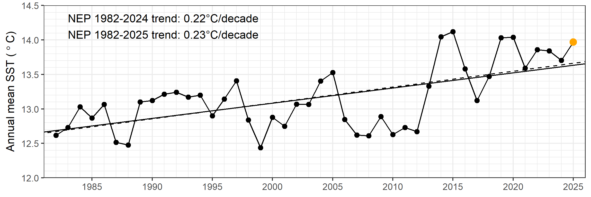
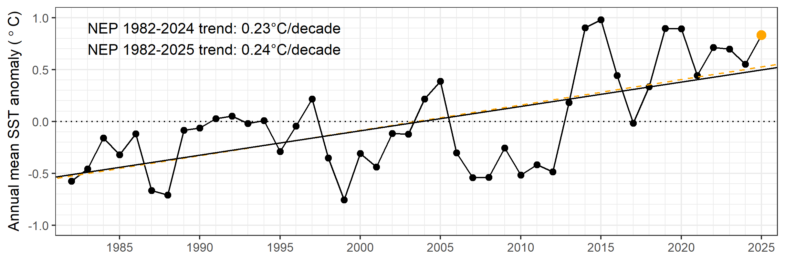

Sea surface temperature in the Northeast Pacific
Sea surface temperature (SST) and its anomalies, or deviations above or below the “normal” conditions, are important to monitor over time. Variations that happen for an extended period of time, or are large in magnitude, may have very large impacts on the larger ecosystem. Marine heatwaves (MHWs) are a topic of growing concern, as large-scale heat events can negatively affect the life cycles, food availability, and habitat of so many species that live in our oceans. MHWs are typically defined as temperatures above the upper 90th percentile of what is typical for a given area (see Hobday et al. (2016) and Hobday et al. (2018) for further reading about commonly used definitions). On the other hand, Marine cold spells (MCSs), are periods where temperatures are cooler than the lower 10th percentile typically observed in a location, and may also have both positive and negative effects on ecosystems (see Schlegel et al. (2021) for more).
 Bull kelp, Nereocystis luetkeana, a species negatively impacted by marine heatwaves. Image from Wikimedia Commons, license CC BY SA 2.0.
{kind=link}
How to use this page
This page updates weekly with maps and figures from a number of different data sources, for monitoring SSTs and MHWs in the Northeast Pacific and Canadian Exclusive Economic Zone (EEZ) off of the province of British Columbia (BC). The goal is to provide recent maps and information to monitor developing surface ocean temperature events in the NEP.
A summary of the methods used here and further details can be found in Hilborn et al. (2025). The OISST and buoy data can also now be found in the pacea R package (Edwards et al. 2024).
These figures are provisional and correctness is not guaranteed. These figures update weekly on Mondays using the most recent week of data. The climatologies for satellite and buoy data are calculated from the Canadian Climate Normals period of 1991–2020.
Northeast Pacific SST and SST anomaly
- Dataset: NOAA Optimal Interpolation gap-filled SST (OISST)
- Data access: Coastwatch ERDDAP Near-realtime and Science-quality records
- Spatial resolution: 0.25° (~25 km)
- Climatology period: 1991–2020
- Region boundaries: 30-65°N and 120-160°W
5-degree intervals are marked as lines on the SST plot (left). On the anomaly plots (right) the lines indicate 1.29 and 2.33 standard deviations above normal (approximately the upper 90th and 99th percentiles relative to the climatology). The BC EEZ is indicated with a dashed line. Points indicate selected stations along Line-P.
Latest week of data


Marine heatwave conditions in the Northeast Pacific and BC Exclusive Economic Zone
The 2025 MHW spatial coverage of the NEP and BC EEZ sub-regions are shown below. The coverage from the previous year, 2024, is shown for comparison as a shaded grey area. The current percent area of each region in MHW status in the surface waters is written in the upper left corner. The same information is shown below for the NEP (black), BC EEZ (red) and three sub-regions:
- Offshore Pacific Bioregion (OP, light blue)
- Northern Shelf Bioregion (NSB, dark blue)
- Southern Shelf Bioregion (SSB, yellow)

 Download the data from this figure here.
Download the data from this figure here.
How does SST in the Northeast Pacific compare between years?
The average SST and SST anomaly of the NEP is shown below, beginning in 1981. A few years have been selected for further emphasis. 2014 and 2015, years of “the Blob”, are shown in pink and purple. 2019, another anomalously warm year occurring during an El Nino, is shown in cyan. The most recent three years, which have also been some of the warmest on record, are shown as orange (2023), brown (2024), and red (2025).

Rankings of 10 warmest years since 1981
When averaging the SST and SST anomaly for each year for the entire NEP (right), the years of “the Blob” were the warmest overall since 1981. 2025 ranked at number 5, behind 2019 and 2020.
Below are top 10 rankings of SST when averaged for the entire NEP by month. Click on the tab to alternate between the averaged SST and SST anomaly.

The point indicates the mean of the SST by month, with the bars indicating the monthly standard deviation bounds. The years are indicated on the left, with warmest indicated with a rank of “1.” 
The point indicates the mean SST anomaly by month, with the bars indicating the monthly mean anomaly standard deviation bounds. The years are indicated on the left, with highest mean anomaly indicated with a rank of “1.” 
Annual mean and anomaly SST trend
Below are plots of the SST and SST anomaly, averaged by year and beginning in 1982, for the NEP. The trendline was calculated using a linear least-squares model.
The points indicate the mean SST by year, with 2025 indicated in orange.

The points indicate the mean SST anomaly by year, with 2025 indicated in orange.

ECCC Buoy data
- Dataset: Surface temperature observations from Canadian Pacific buoys maintained by Environment and Climate Change Canada (ECCC) and Fisheries and Oceans Canada (DFO)
- Data access: CIOOS Pacific ERDDAP DFO_MEDS_BUOYS and ECCC_MSC_BUOYS records. The DFO_MEDS_BUOYS record has a detailed quality control layer outlined in Kellogg et al. (2021) which ceased in December, 2023
- Climatology period: 1991–2020
The white lines outlined in black are daily mean observations from 2025. The buoy climatological mean (grey line) is plotted with 10th and 90th percentiles (grey shading). The climatology spans 1991–2020, though some buoys began collecting data later: C46146 Halibut Bank, C46131 Sentry Shoal, C46147 South Moresby and C46132 South Brooks.
There are no climatologies for C46303 South Georgia Strait and C46304 Entrance English Bay as they were installed in 2019. C46147 South Moresby and C46183 North Hecate Strait are currently offline.